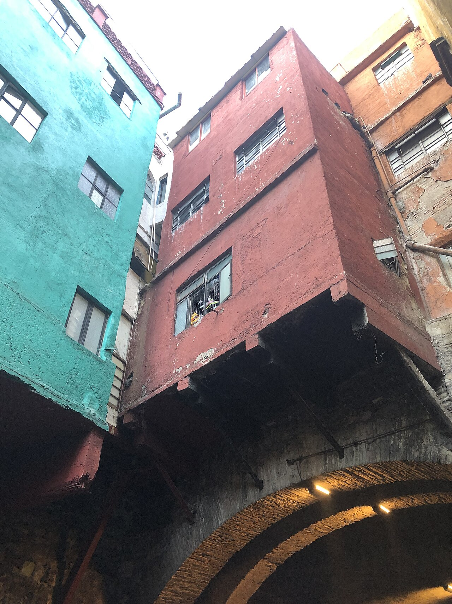

About the Project
An academic journey


An academic journey
as a formative
experience.

This journey is not merely a recreational activity, but a structured formative experience that reinforces classroom knowledge through observation, analysis, and experimentation in real contexts.
Under STEAM methodology, it integrates seven academic subjects across thirteen stops that account for 50% of the third term.
0
Itinerary stops
0
Academic subjects
50%
of the third term